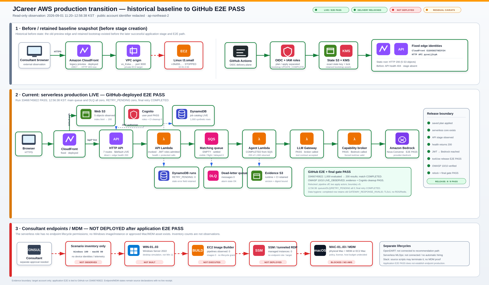
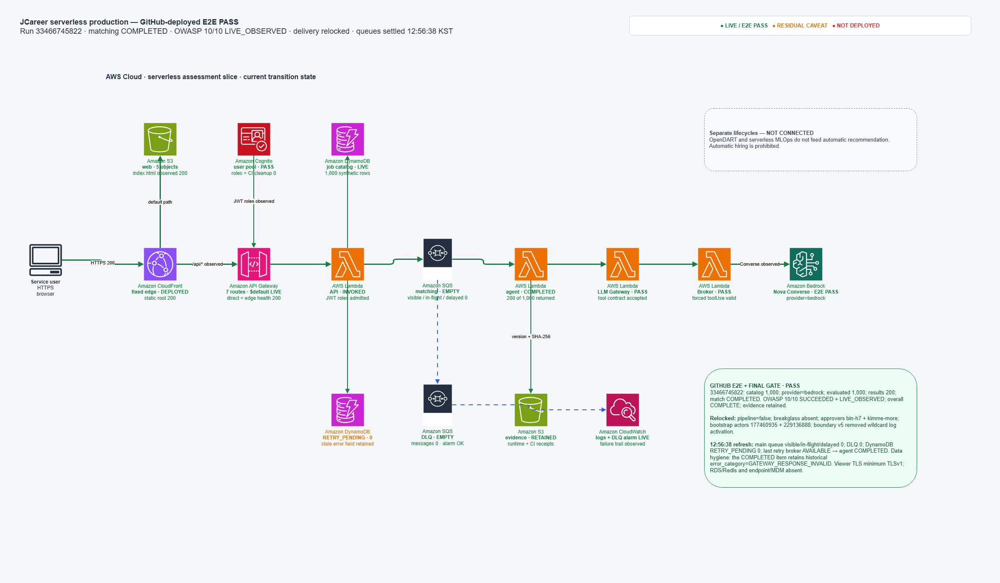
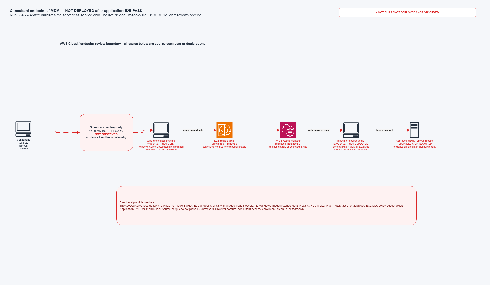

기존 preview는 fallback이 아니었습니다.
VPC origin의 Linux EC2가 중지됐고 기존 CloudFront는 HTTP 403을 반환했습니다.
JC-PROD-TRANSITION-001 · point-in-time evidence
기존 업무망·Slack·GitHub CI·Pages·AWS·LLM Gateway·Bedrock·OpenDART·MLOps 전체 지도는 기준선으로 보존합니다. 이 페이지는 그중 실제 배포가 끝난 서버리스 AI 경로와 아직 끝나지 않은 일을 2026-09-01 시점 증거로 분리합니다.
Run 33466745822 · 매칭 COMPLETED · OWASP 10/10 LIVE_OBSERVED · delivery relocked
VPC origin의 Linux EC2가 중지됐고 기존 CloudFront는 HTTP 403을 반환했습니다.
Bedrock 매칭 완료, OWASP 10/10 관찰, evidence 보존과 Cognito 정리를 한 실행에서 확인했습니다.
Main queue 0 · DLQ 0 · DynamoDB RETRY_PENDING 0. 단, 한 완료 항목의 과거 오류 필드는 남아 있습니다.
Observed production transition
녹색은 이번 GitHub E2E에서 확인된 경로, 주황은 잔여 caveat, 빨강은 아직 배포하거나 관찰하지 않은 범위입니다. 계정 식별자는 공개본에서 제외했습니다.

관찰 시점 · 2026-09-01 12:56:38 KST편집 원본 · 3페이지 draw.io · 공개본 계정 식별자 비식별화
provider=bedrock · COMPLETEDSUCCEEDED · 10/10 LIVE_OBSERVEDTLSv1 · 상향 필요GATEWAY_RESPONSE_INVALID 필드 잔존Scope ledger
Detailed plates
첫 도면은 성공한 애플리케이션 경로, 둘째 도면은 아직 사람이 승인하고 구축해야 하는 엔드포인트·MDM 경계입니다.


{kind=link}
{kind=link}
{kind=link}